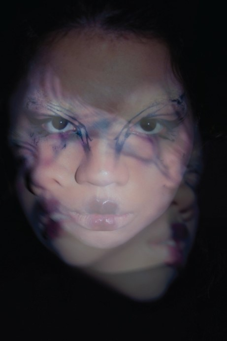

Tokens
Black page, grey serif text, near-white titles, one teal accent. Every color is a :root token in css/tokens.css.
Type
BHN Cinema only for the logo and big page titles. Crimson Text for everything else, often italic.
Graphic Design
A line under the page title, before the filters. With a link.
Section heading, Crimson Text
Italic subtitle for labels and captions
Small uppercase kicker
Body copy sits in grey at a 1.8 line height. Links shimmer teal on hover, and anything clickable blurs softly instead of changing color.
Pills & toggles
Tag chips, the segmented view toggle (a frosted pill slides behind the active button), and side tabs. The fixed side tabs slide in from the left edge once you reach the project cards below.
Showing code projects.Showing UI/UX projects.
Project cards
Two-up on desktop with subgrid rows so neighbours line up; one column on phones, reordered. Link cards blur on hover; plain ones don't. Use the side tabs on the left to filter.
List thumbnails
The Play page list: picture left, title and blurb right. Only rows with a link blur.

Gallery & lightbox
Three-column masonry (two on tablets, one on phones). Click a picture to open it; Esc, the ×, or a click outside closes it.


Hover previews
Give any element data-previews="a.jpg|b.jpg". Hovering (or tabbing onto) it pops one picture up at a random spot, a different one each time. Instant, no fade. Mouse only.
Flip card
The About headshot. Hover the front for a random picture; click to flip to a feathered grid of small ones, each hoverable.
Click again to flip back.
Accordion
Receipts that fold away.
--accent and the related --accent-* and --rail-glow* tokens after loading the kit.Panels
From the case-study system: callouts with numbered points, stats, rollout phases, and the call-to-action panel link. See the full case-study example for the progress rail, hero and pager.
Before
- Resources buried three menus deep
- No offline mode
- Search only matched exact titles
After
- One search bar, fuzzy matching
- Works on a bad connection
- Saved lists per coordinator
Results
- 12
- weeks, start to handoff
- 3×
- faster to find a resource
- 40+
- screens in Figma
Phase 1
Pilot
One clinic, two weeks.
Phase 2
Region
Feedback loop with coordinators.
Phase 3
Everywhere
Default for every site.
Loader
The loader GIF shows between pages only when a page is slow (over 200 ms), and always on the way home. Every click on something interactive also makes a tiny synthesized fire crackle (js/fire.js).